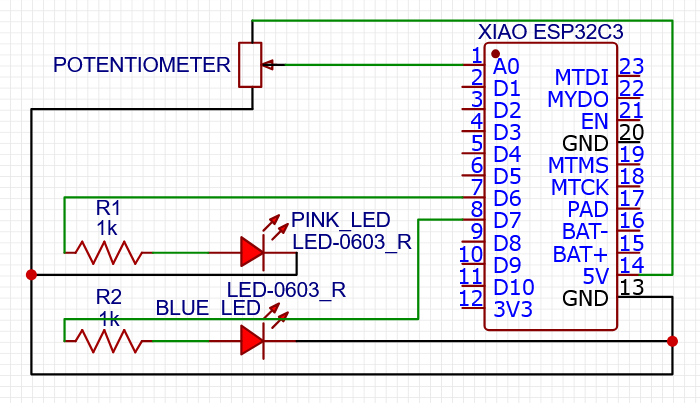

<div class="textcontainer">
<p class="margin"> </p>
<h3>Week 4: Microcontroller Programming</h3>
This week I decided to work on the light aspect of the jellyfish lava lamp. I wanted to have different color and brightness settings. Taking inspiration from lab, I decided the easiest way to do this would be a potentiometer combined with Xiao controls. When I turn the potentiometer, the color will dim then switch colors so I can control both brightness and color.
<br><br>
<figure>
<p></p>
<figcaption> The circuit diagram made on <a href="https://easyeda.com/" target="_blank" rel="noopener noreferrer"> EasyEDA</a>
</figcaption>
</figure>
<br> <br>
One issue that arose was one LED staying on when the other LED turned on, but this was easily fixed by adding commands for the other LED to turn off at the beginning of if statements.
Below is the code I originally wrote. It would be easy to add more LEDs by initiating more variables and adding more if loops. I could also do color combos (ex. warm or cool) by adding multiple LEDs in series.
<pre>
<code>
/*Initializing LED pins and variables*/
/* add more pins here and vary pin mapping based on specific wire connections*/
int potPin = A0;
int potVal;
int ledPin1 = D6;
int ledPin2 = D7;
int ledVal;
int ledValb;
const int freq = 5000;
const int resolution = 8;
/* Setting up input and output pins */
void setup() {
pinMode(potPin, INPUT);
pinMode(ledPin1, OUTPUT);
pinMode(ledPin2, OUTPUT);
ledcAttach(ledPin1, freq, resolution);
ledcAttach(ledPin2, freq, resolution);
}
/*Mapping potentiometer values to LED light brightness and which circuit is on*/
void loop() {
potVal = analogRead(potPin);
ledVal = map(potVal, 0, 4095, 0, 255);
if (ledVal < 125) {
/*Here I mapped the LED values backwards to the converted potentiometer readings,
making the LED brightest at the lowest values of the potentiometer readings.*/
ledValb = map(ledVal, 0, 125, 255, 0);
ledcWrite(ledPin2, 0);
ledcWrite(ledPin1, ledValb);
}
if (ledVal > 125) {
ledValb = map(ledVal, 125, 255, 255, 0);
ledcWrite(ledPin1, 0);
ledcWrite(ledPin2, ledValb);
}
}
</code>
</pre>
<br><br>
Here is the result! <br>
<iframe src="https://drive.google.com/file/d/1PLgV-fqCrWAQyur5bXMsZ6nYJY0-2-T9/preview" width="640" height="480"></iframe>
<br><br>
I also made a different version that set the brightest settings at the furthest the potentiometer knobs would go and the low setting in the middle by changing the mapping values to:
<br>
<br>
<code>
ledValb = map(ledVal, 125, 255, 0, 255);
</code>
<br>
<br>
And here is the result:
<br>
<iframe src="https://drive.google.com/file/d/1onYh_Q1Ev6scsUq0RtK6hB0IEAmJKXvb/preview" width="640" height="480"></iframe>
<br><br>
Hopefully I can incorporate this into a revised jellyfish kinetic sculpture at some point!
<br><br>
<h4>Future Plans</h4>
<ul>
1. Incorporate into jellyfish design
<br>
2. Add more LEDs or LED color combos that work well for jellyfish
<br>
3. Create a (replacable) knob indicator and knob to show the colors for each area of the knob
</ul>
Shoutout Kassia for commisserating with me about the MD and MD/PhD application process! We're almost there!
</div>